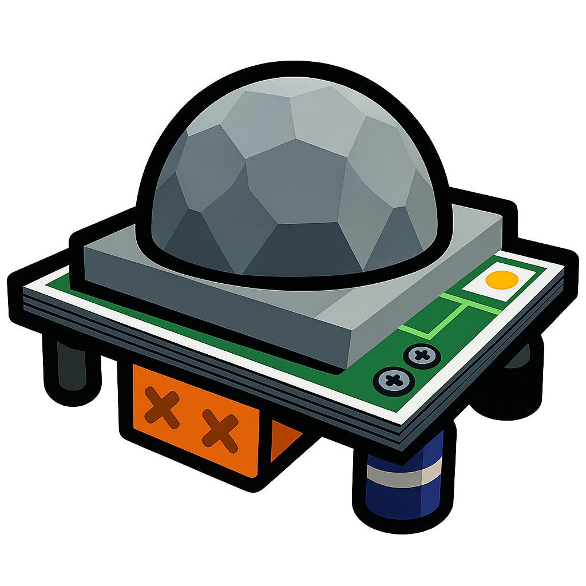

Gameplay
Bei GunsOut geht es darum, die echten Spieler zwischen einer Menge an NPCs zu finden und diese zu eliminieren. Dabei muss jeder Spieler darauf achten, selbst nicht durch das Verwenden von Items oder auffälliges Verhalten aufzufallen.
Das Spiel läuft in Runden mit zwei Phasen:
Tagsüber
Items kaufen, Gadgets platzieren und NPCs beobachten, um echte Spieler zu enttarnen.
Nachts
Alle Items und Waffen werden aktiv. Jetzt heißt es: Überleben, unbemerkt zuschlagen und Geld verdienen.
Das Spiel endet nach 3 Runden (Tag&Nacht) und der Gewinner ist der, der am meisten echte Spieler erledingt hat und dabei am wenigsten gestorben ist – auch invalide Kills zählen als Tod.
Items
Items sind im Spiel verfügbare Werkzeuge und Waffen, die strategisch eingesetzt werden können, um andere Spieler zu finden, sich zu verteidigen oder anzugreifen. Jedes Item hat seine eigenen Vor- und Nachteile und kann mit anderen Items kombiniert werden.
Smoke Cartridge
Erzeugt eine große Wolke aus undurchsichtigem Rauch. Hilft dabei sich zu verstecken, oder sich wieder unter NPCs zu mischen. Lässt sich kurzfristig von Explosionen durchdringen.
Remote Bomb
Ferngezündeter Sprengsatz, der sich aus jeder Distanz aktivieren lässt. Großer Schaden in einem kleinen Umkreis – gut kombinierbar mit dem Proximity Alarm. Kann durch andere Explosionen oder Schüsse detoniert werden.
Straw Rifle
Improvisiertes Gewehr aus Strohhalmen. Präziser, geringer Schaden auf jede Distanz. Unbegrenzte Munition.
 Proximity Alarm
Schlägt Alarm, sobald sich ein echter Spieler in der Nähe befindet. Gut einsetzbar bei Engpässen oder Hotspots. Lässt sich mit Explosionen oder Schüssen zerstören.
Maniac Mouse
Sucht selbstständig den nächsten echten Spieler und fährt zu dessen Position. Explodiert, sobald der Spieler erreicht wurde, verursacht hohen Schaden. Lässt sich durch Explosionen oder Schüsse vorzeitig detonieren.
Gallerie
Bilder vom Gameplay, Assets und Editor

Der Item Shop - Hier können neue Waffen und Gadgets gekauft werden

Diverse haushaltsbezogene Assets, engine-ready aber noch nicht verwendet.
Roadmap
Guns Out befindet sich aktuell noch in einer frühen Entwicklungsphase. Demnach gibt es noch viele Dinge, die sich ändern werden. Ein paar der größten Punkte sind:
- NPC-KI verbessern
- UI & Menüs überarbeiten
- Bugfixes & Quality of Life
- Mehr Items & Balancing
- Map belebter machen